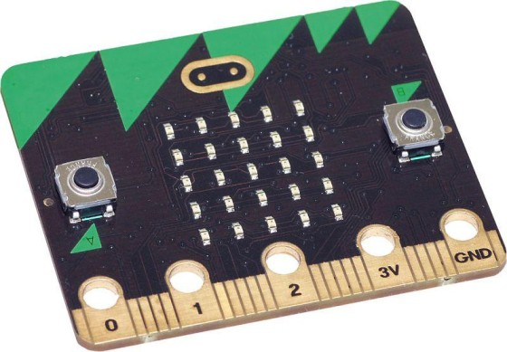

A BBC Micro:bit is a pocket-sized computer 70 times smaller and 18 times faster than the original BBC Micro computers used in schools. It has 25 red LED lights that can flash messages and be used to create games. There are two programmable buttons that can be used to control games or pause and skip songs on a playlist. It has pins on the bottom that you can use to connect external devices.
